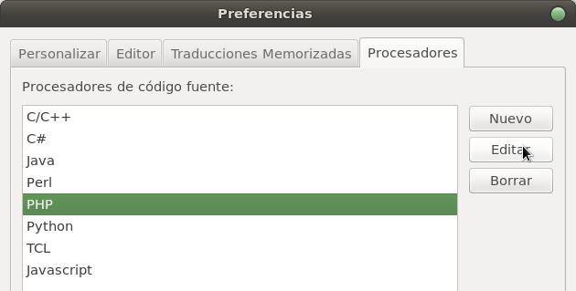
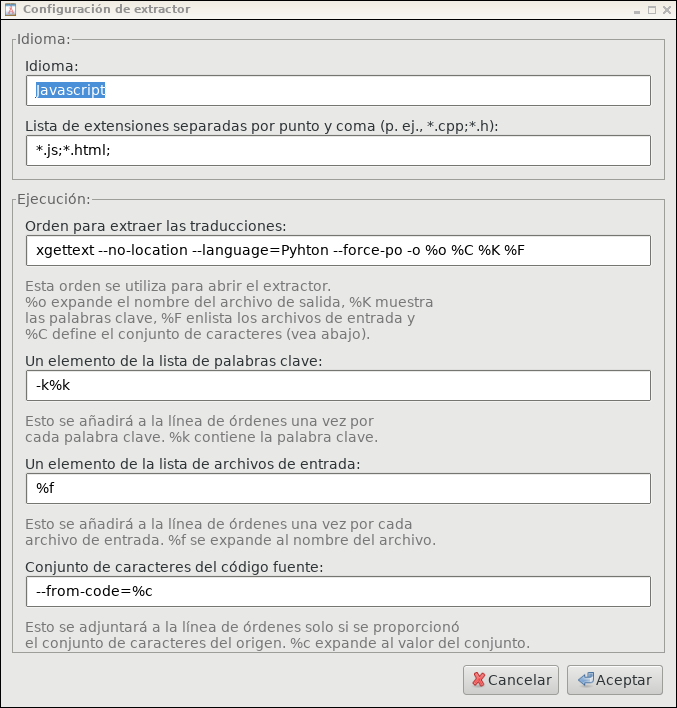

En la sección Klear.yaml se explica la forma de configurar correctamente el archivo de configruación klear.
A continuación se muestra un listado con los idiomas que Klear soporta en este momento:
langs:
es:
title: Español
language: es
locale: es_ES
eu:
title: Euskera
language: eu
locale: eu_ES
ca:
title: Català
language: ca
locale: es_ES
gl:
title: Galego
language: gl
locale: es_ES
en:
title: English
language: en
locale: en_US
Los strings de traducción del core de Klear se agrupan dentro de su respectivo módulo.
.
├── klear
│ ├── (...)
│ ├── languages
│ │ ├── ca_ES
│ │ │ ├── ca_ES.mo
│ │ │ └── ca_ES.po
│ │ ├── en_US
│ │ │ ├── en_US.mo
│ │ │ └── en_US.po
│ │ ├── es_ES
│ │ │ ├── es_ES.mo
│ │ │ └── es_ES.po
│ │ ├── eu_ES
│ │ │ ├── eu_ES.mo
│ │ │ └── eu_ES.po
│ │ ├── gl_ES
│ │ │ ├── gl_ES.mo
│ │ │ └── gl_ES.po
│ │ ├── js-translations.php
│ │ └── pot
│ │ ├── klear.mo
│ │ └── klear.pot
│ (...)
└── klearMatrix
├── (...)
├── languages
│ ├── ca_ES
│ │ ├── ca_ES.mo
│ │ └── ca_ES.po
│ ├── en_US
│ │ ├── en_US.mo
│ │ └── en_US.po
│ ├── es_ES
│ │ ├── es_ES.mo
│ │ └── es_ES.po
│ ├── eu_ES
│ │ ├── eu_ES.mo
│ │ └── eu_ES.po
│ ├── gl_ES
│ │ ├── gl_ES.mo
│ │ └── gl_ES.po
│ ├── js-translations.php
│ └── pot
│ ├── klearMatrix.mo
│ └── klearMatrix.pot
└── (...)
La estructura de los archivos de idioma del proyecto es la siguiente:
.
├── application
│ ├── (...)
│ ├── languages
│ │ ├── ca_ES
│ │ │ ├── ca_ES.mo
│ │ │ └── ca_ES.po
│ │ ├── en_US
│ │ │ ├── en_US.mo
│ │ │ └── en_US.po
│ │ ├── es_ES
│ │ │ ├── es_ES.mo
│ │ │ └── es_ES.po
│ │ ├── eu_ES
│ │ │ ├── eu_ES.mo
│ │ │ └── eu_ES.po
│ │ ├── gl_ES
│ │ │ ├── gl_ES.mo
│ │ │ └── gl_ES.po
│ │ ├── js-translations.php
│ │ └── pot
│ │ ├── project.mo
│ │ └── project.pot
(...)
Las traducciones dependiendo del lenguaje que se esté usando, se definen de diferente manera.
A continuación se explica como abordarlo con cada uno de ellos:
En PHP se utiliza el Zend_Translate, que tiene diferentes métodos definidos para traducir textos simples o plurales.
<?
$this->view->translate(
'car'
);
$color = "red";
$this->view->translate(
"%1\$s car",
$color
);
$this->view->translate(
"Today is %1\$s in %2\$s. Actual time: %3\$s",
$date,
$month,
$time
);
<?
$this->view->plural(
'Car',
'Cars',
$number
);
Atención
El código utilizado se implementa desde el controller, para hacerlo desde la vista (*.phtml) habría que quitar el ->view de todos los $this->view, quedando $this. Ya que al estar en el view, $this sería igual a $this->view.
Por ejemplo el plural quedaría así desde la vista:
<?
$this->plural(
'Car',
'Cars',
$number
);
En el lenguaje de javascript se utiliza el plugin de traducciones jQuery Translate.
$.translate('car');
$.translate('This %s is so beautiful', 'car');
Nota
Al contrario que en la parte de php, en javascript solo está implementado el reemplazo de un único parametro. Tampoco se implementan los plurales.
Para poder utilizar los mismos archivos .mo y .po definidos anteriormente en la zona pública, hay que configurar el fichero application.ini de la siguiente manera:
resources.frontController.plugins[] = 'Iron_Controller_Plugin_PublicTranslator'
translate.language.es.title = 'Euskara'
translate.language.es.language = 'eu'
translate.language.es.locale = 'eu_ES'
translate.language.es.title = 'Español'
translate.language.es.language = 'es'
translate.language.es.locale = 'es_ES'
translate.language.en.title = 'English'
translate.language.en.language = 'en'
translate.language.en.locale = 'en_US'
translate.language.fr.title = 'Francés'
translate.language.fr.language = 'fr'
translate.language.fr.locale = 'fr_FR'
translate.language.pt.title = 'Portugués'
translate.language.pt.language = 'pt'
translate.language.pt.locale = 'pt_PT'
translate.requestParam = 'lang'
translate.defaultLanguage = 'eu'
translate.cookies.enabled = true
translate.cookies.lifetime = 2592000 ; 1 month
defaultLanguageZendRegistryKey = 'defaultLang'
Para traducir los textos se utiliza el editor Poedit.
La instalación en entornos Ubuntu es bastante sencilla, basta con:
$ apt-get install poedit
La manera más sencilla de configurar poedit es descargar el fichero config y almacenarlo en el directorio ~/.poedit/ Si se ha copiado el fichero en su destino podemos pasar a la Configuración del catálogo Si se prefiere realizar a mano la configuración, habrá que seguir los pasos siguientes.
En el menú Edición -> Preferencias, en la pestaña de Procesadores, se elige el lenguaje a editar y se clicka en Editar.
Puede que ésta configuración no exista anteriormente, por lo que en lugar de editar deberemos crear una nueva.
La configuración debe quedar así:
Tendremos que configurar cada catálogo, para que acepte plurales, para setear el path, etc.
Para ello en el menú Catálogo -> Opciones: